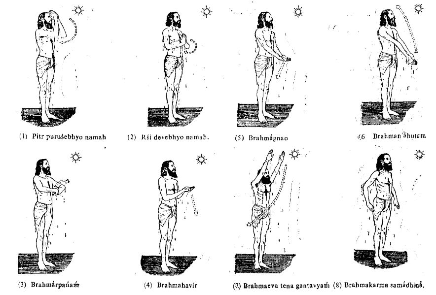

|
First pour water on the navel. Then wet the region below the navel by splashing water from the front. Then pour water from behind. Thereafter pour water on the crown of the head in such a way that it trickles down over the backbone. Then bathe all over.
If you want to take a dip bath, first pour water over the waist, on the navel region, and below, in the above-mentioned way, and then take the dip.
After finishing your bath, before drying your body, recite the following mantra while performing the prescribed mudrá and looking at any luminous object:
Pitr puruśebhyo namah rśi devebhyo namah.
Brahmárpanaḿ Brahmahavir Brahmágnao Brahmańáhutam.
Brahmaeva tena gantavyaḿ Brahmakarma samádhiná.(1)
Repeat the mantra together with the mudrá three times.
Remembering the rśis and ancestors in this way is known as Pitr Yajiṋa. Pitr Yajiṋa should be performed as a daily duty even if one’s father is alive.
The mudrá should be performed according to the illustrations.
One must recite each portion of the mantra as shown by the illustrations. The arrows indicate the intended direction of movement of the hands to reach the next position. Remember that this is to be done at the end of the bath.
Sick persons who are sensitive to cold should take their bath in warm water and in an enclosed and covered place. Sun-warmed water is also good.(2) In extremely cold climatic conditions warm water should be used.(3) If you are not taking a dip bath you should bathe in a sitting position; it is desirable not to bathe standing.
Bathing at midnight is prohibited. One must not take a bath in the midnight sandhyá. Everyone must bathe in any one of the other three sandhyás. Taking into consideration one’s health and the climatic conditions, one may also bathe in one or both of the remaining two sandhyás.
The four sandhyás:
(1) The period from forty-five minutes before to forty-five minutes after sunrise is called “dawn”, and dawn is the first sandhyá.
(2) The period from 9 A.M. to 12 noon is called the noon sandhyá.
(3) The period from forty-five minutes before to forty-five minutes after sunset is called the evening sandhyá.
(4) The period from forty-five minutes before to forty-five minutes after 12 midnight is called the midnight sandhyá (11:15 P.M. to 12:45 A.M.).

Footnotes
(1) Meaning of the mantra:
Salutations to the ancestors, salutations to the god-like rśis. (Those who, by inventing new things, have broadened the path of progress of human society, are known as rśis.)
The act of offering is Brahma; that which is offered is Brahma; the One to whom the offering is made is Brahma; and the person making the offering is Brahma.
One will merge in Brahma after completing the duty assigned to him/her by Brahma.
(2) The water temperature should always be less than body temperature.
(3) The water temperature should always be less than body temperature.